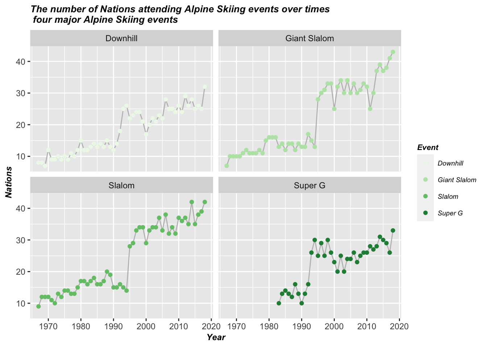
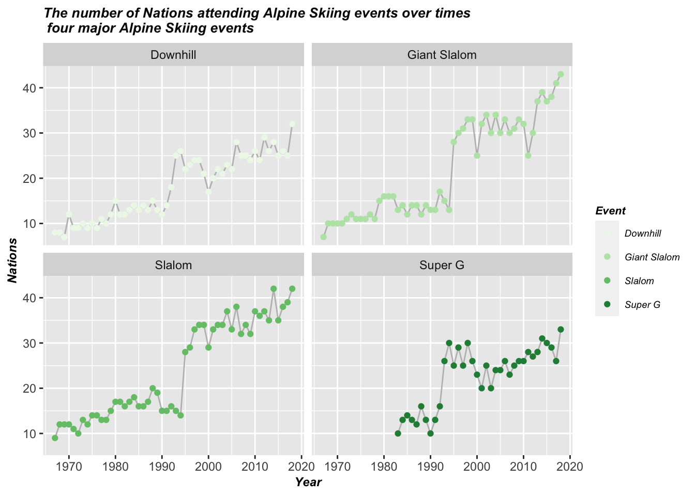
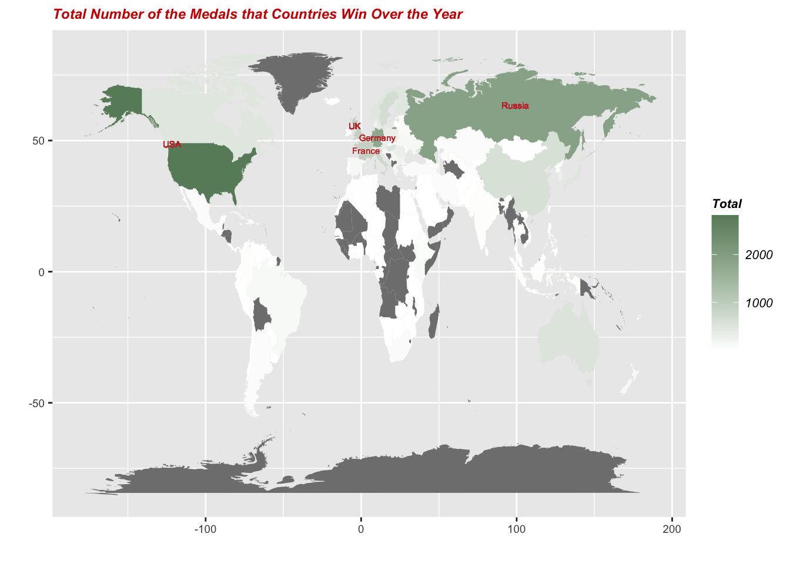

Chapter 9 Q2: Since the 2022 Winter Olympics was held this year, what about the development of Alpine Skiing in the Winter Olympics?

 
# Q3: Which countries are the most dominant over the history of Olympics?
## Pic 5

# Q3: Which countries are the most dominant over the history of Olympics?
## Pic 59.3 Pic 6
 # Q4: What is the Participation Ratio of Men to Women changes over time? Is this ratio increased or decreased?
## Pic 7
# Q4: What is the Participation Ratio of Men to Women changes over time? Is this ratio increased or decreased?
## Pic 7
 # Q5: Are athlete’s Age, Height and Weight related to their race results?
## Pic 8:
# Q5: Are athlete’s Age, Height and Weight related to their race results?
## Pic 8:
## Importance of components:
## PC1 PC2 PC3
## Standard deviation 1.3572 0.9816 0.44211
## Proportion of Variance 0.6138 0.3211 0.06513
## Cumulative Proportion 0.6138 0.9349 1.00000## PC1 PC2 PC3
## Age -0.212 0.975 -0.059
## Height -0.687 -0.192 -0.701
## Weight -0.695 -0.108 0.710## [1] "PC1 = -0.21 x Age + -0.69 x Height + -0.7 x Weight"## [1] "PC2 = 0.98 x Age + -0.19 x Height + -0.11 x Weight"
- The first two principal components have been contructed as:
PC1 = -0.21 x Age + -0.69 x Height + -0.7 x Weight
PC2 = 0.98 x Age + -0.19 x Height + -0.11 x Weight
- Medal Results can not be ideally classifed by principal components composed with Age, Weight and Height, concerning the fact that the first two principals have already been efficient in explaining 93.5% information of Age, Weight and Height, yet Medal results still mixed together in the score plot.